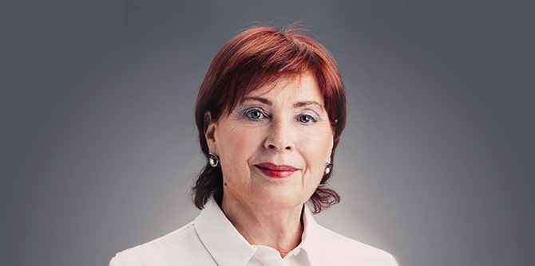

קרן מנדל-ישראל שמחה להודיע על מינויה של
פרופ' תמר אריאב למנהלת האקדמית החדשה של קרן מנדל-ישראל. לפני הצטרפותה לקרן מנדל הייתה תמר נשיאת המכללה האקדמית בית ברל בשנים 2020-2008, לפני כן הייתה חברת סגל במכללה מ-1985 וכיהנה בה במגוון תפקידים לאורך השנים. בשנים 2008-2002 הייתה תמר חברה במועצה להשכלה גבוהה בישראל, שם הייתה חברה בכמה ועדות וכן הייתה יו"ר הוועדה לקביעת קווים מנחים בהכשרה להוראה (ועדת אריאב) בשנת 2006. על כהונתה כנשיאת המכללה האקדמית בית ברל זכתה תמר בשנת תשפ"א בפרס ההשכלה הגבוהה בקטגוריית "ראש מוסד" על קידום יוצא דופן של מוסד להשכלה גבוהה.
תמר סיימה לימודי תואר ראשון בכלכלה וסטטיסטיקה ותואר שני בתכנון לימודים באוניברסיטת תל אביב. את תואר הדוקטור קיבלה מאוניברסיטת פנסילבניה (פילדלפיה) בתחום תכנון לימודים והוראה. תחומי ההתמחות שלה כוללים תכנון והערכה של תוכניות לימודים, ומחקריה בשני העשורים האחרונים התמקדו בעיקר בתחומי מדיניות הוראה וחינוך. היא פרסמה ספרים, פרקים בספרים ומאמרים, והרצתה בכנסים בארץ ובחו"ל.
תמר לימדה בבתי ספר בישראל, בגרמניה ובארצות הברית, עבדה בתחום החינוך היהודי בארצות הברית והייתה חוקרת אורחת באוניברסיטת קליפורניה באירוויין.
את חזונה לתפקיד המנהלת האקדמית של קרן מנדל-ישראל מתארת תמר כך:
"תפקיד המנהלת האקדמית של קרן מנדל-ישראל הוא תפקיד חדש ומאתגר שנועד לקדם את שאיפתו של הארגון להגביר את השפעתו בתחום המנהיגות החינוכית והחברתית בישראל. כמנהלת האקדמית, אני מתכוונת לסייע בעדכון תוכניות הלימודים של התוכניות השונות וביצירת סינרגיה אופקית ביניהן. בין משימותיי העיקריות: פיתוח חזון פדגוגי משותף לכל התוכניות, גיוון אוכלוסיות היעד בתוכניות באופן שיתרום לשיפור הזירה החינוכית בישראל, וכן פיתוח מקצועי של חברי הסגל. אני מתכוונת להרחיב את שיתוף הפעולה עם משרד החינוך, עם ארגונים העוסקים בחינוך, עם שחקנים במגזר השלישי ועם השלטון המקומי כדי למנף את יכולתה של קרן מנדל-ישראל להציב את בוגריה בתפקידים ובארגונים בעלי השפעה."
{kind=link}